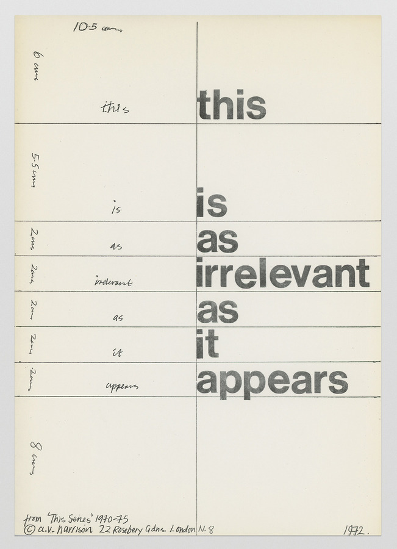

It is near impossible to explain the significance of language and list all of its uses since we are simply unable to comprehend the vast pool of purposes that it is utilized for by other people, a pool that is only expanding throughout the course of time. Literary experiments and linguistic research might have been something that was reserved for intellectuals and the higher ruling class in the past but is now something accessible to every single human being. Unfortunately, the structural and systematic approach that we are traditionally taught to perceive language with is, at times, unable to fully reflect all of the psychological and sociological needs we have in the process of our communication.
It is for these reasons, that many people throughout history had sought to challenge the traditional notion and understanding of language because they could not be content with the thought that the current mode of communication is all there is and there is nothing that we could do to expand it. They realized, that their inner worlds, as well as the ever-changing outside world, are simply too complex to be translated into such a “primitive” structure as the conventional form of our languages. Such experiments were first undertaken by numerous writers and poets, who bent and broke grammatical and semantical rules in an effort to reinvent literature and change the way we perceive information. The increasingly progressive treatment of text gave birth to many new literary movements and undoubtedly left an impact on the way we read and write. However, it seems that despite all of these extensive changes, people were still left craving for a way to expand their communication skills even further. To find another medium that would perhaps be able to embrace the more ambiguous and murky parts of our communication, or, be able to transcend all language barriers and allow us to clearer shape our messages.
Rapid industrial, and then technological changes that we as a society have experienced in the past 100 years have unmistakably left a strong imprint on the way we communicate with each other and use language. One of the most noteworthy of these changes was the introduction and consequent accessibility of images and video. In fact, if before we could only conduct our communication through the means of speech and writing, as pertains to traditional linguistics and language classifications, we had suddenly found ourselves in a different kind of situation, as our world became flooded with images.
In order to examine this shift in communication it would be useful to take a look at the concrete poetry movement. It is perhaps the most straightforward representation of a persons desire to expand our way of communicating between each other by paying attention to and introducing elements that we had previously neglected. Concrete poets were not only interested in manipulating pre existing constructs of linguistic rules, but they were also intent on finding entirely new linguistic material. The strong ties that concrete poets had with artists at the time left a strong impact on the way they went about seeking this material. They explored the physicality and materiality of words, looking at separate letters and formations as nothing more than visual structures. Visual structures that could in turn, through the way that they look, give birth to new words and expressions, and the process of experimentation became an endless cycle. Concrete poets believed, that by freeing words from their stuffy preconceived constructs, they will be able to achieve a new method of self expression that is closest to what true human communication is. They were fixated on the idea of making the way we communicate more contemporary, by recognising the materiality in which we reside in our daily lives.They were intent on creating their own language, which would be, as they titled it, verbivocovisual and panlinguistic. Some of them, went as far as dismissing the semantic aspect of language whatsoever, focusing instead on transmitting an absolutely new kind of information. Their main goal was to create visuals that could transmit messages to everyone that saw them, regardless of their personal background or what language they spoke.
It is then interesting to note, how an entire branch of poetry that boggled the minds of many, who were perhaps not ready to receive and understand the bogus propositions that the concrete poets were making, is completely mirrored in the results of the digital revolution. Something that was before reserved for writers, poets, and artists has become the mundane day-to-day of any person with access to electronic tools, television, and the media. While concrete poets were only left to imagine what it would be like to communicate through images and sounds, we do so every day.
One of such pictorial tools, that has become truly ubiquitous at this point in time, is emojis. Nowadays it is hard to image any kind of textual communication between people to be devoid of a visual element to it. We utilise emoji’s and online “stickers” to convey the fleeting feelings and emotions that we feel we are unable to correctly translate without some kind of visual representation. It is quite peculiar how quickly people had adapted to this new language, considering that emoji’s had been invented in 1999 and writing letters and exchanging texts between each other has been something that human beings were doing since the beginning of time. Why did communicating via simple text suddenly become something that appears so dry and lifeless, when just adding an emoji to it, or, at times, responding only with an emoji, becomes a better descriptor of the way a particular person is thinking? If concrete poets were trying to make words look like images, emoji’s stepped in and eradicated words entirely, embracing that same materiality that the concrete poets tried so hard to grasp, as the amount of emoji’s used to represent real tangible objects continues to expand as we speak. The system of symbols grows and changes with us, as we continuously contribute new elements to our collective digital language. Certain emoji’s grow out of their direct clear representation entirely, as they are used to mask or stand in for other things that are not directly represented, in the mean time turning into their own little agents of ambiguity.
